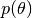
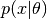

Conjugate Prior and Posterior¶
Conjugate prior plays an important role in Bayesian analysis. In Bayesian theory, the distribution  is said to be conjugate w.r.t. a conditional distribution (often referred to as the likelihood model) , if the posterior distribution  is in the same family as . (Interested readers may refer to this wikipedia article for more detais.)
is in the same family as . (Interested readers may refer to this wikipedia article for more detais.)
Generic Interface¶
In Bayesian analysis, canonical parameterization (i.e. the parameterization using canonical parameters) is often the most efficient. With a conjugate prior, the canonical parameters of the posterior are simply the sum of the canonical parameters of the prior and the sufficient statistics obtained from the data (w.r.t. the likelihood model).
Motivated by this, we design the interface as described below to support Bayesian inference based on conjugate models:
- posterior_canon(pri, G, x[, w])¶
- posterior_canon(pri, ss)
Returns the posterior distribution (in canonical form) w.r.t. the prior pri and the likelihood model G.
- pri: the prior distribution.
- G: the likelihood model. In simple cases, G can be just a distribution type.
- x: the data.
- w: the sample weights (length(w) should be equal to the number of samples). When w is omitted, the data are unweighted (i.e. all samples have unit weights).
- ss: pre-computed sufficient statistics
Note: In general, the returned type need not be the same as typeof(pri). However, when pri is already using the canonical parameters (this is the case for many exponential family distributions), the returned instance is in the same type as pri.
- posterior(pri, G, x[, w])¶
- posterior(pri, ss)
Returns the posterior distribution in the same type of pri, based on given data or sufficient statistics.
- posterior_rand(pri, G, x[, w])¶
- posterior_rand(pri, ss)
Returns a random sample from the posterior distribution based on given data or sufficient statistics.
- posterior_rand!(r, pri, G, x[, w])
- posterior_rand!(r, pri, ss)
Draws random samples from the posterior distribution based on given data or sufficient statistics. The number of samples to draw depends on the size of r.
- posterior_randmodel(pri, G, x[, w])¶
Returns a distribution constructed using a parameter drawn from the posterior based on given data or sufficient statistics.
- posterior_mode(pri, G, x[, w])¶
- posterior_mode(pri, ss)
Returns the mode of the posterior distribution based on given data or sufficient statistics.
- fit_map(pri, G, x[, w])¶
Performs Maximum-a-Posterior (MAP) estimation based on given data or sufficient statistics.
- complete(pri, G, param)¶
Returns a completed distribution based on the likelihood model G and a given parameter param.
Notes: There exists an important difference between posterior_rand and posterior_randmodel. The former returns a parameter (which might be a number, a vector, or other appropriate form of the parameters), while the latter returns a distribution instance. In general, the latter will invoke the complete function to create a distribution from a given parameter. The same differences apply to posterior_mode and fit_map.
Examples¶
We support the conjugate pairs (the list will grow over time as development goes on). We use the posterior function as the example to show how we may work with these pairs (other functions above are also applicable).
# Beta - Bernoulli
posterior(Beta(1.0, 2.0), Bernoulli, x) # each value in x should be either 0 or 1
# Beta - Binomial
# Here, 10 is the number of trials in each experiment
# x is an array of #successes (each for one experiment)
posterior(Beta(1.0, 2.0), Binomial, (10, x))
# Dirichlet - Categorical
posterior(Dirichlet(fill(2.0,k)), Categorical, x) # each value in x is an integer in 1:k
# Dirichlet - Multinomial
# x is a matrix of size (k, n)
# each column of x is the histogram of outcomes in one experiments
posterior(Dirichlet(fill(2.0, k)), Multinomial, x)
# Gamma - Exponential
# Here, the Gamma prior is over the rate parameter of the Exponential distribution
posterior(Gamma(3.0), Exponential, x)
The cases for Normal are more involved, as they have two parameters: the mean and the variance. Sometimes, one of these parameters are known.
# Normal (over mu) - Normal (sigma is known)
pri = Normal(0., 10.)
sig = 2.0
posterior((pri, sig), Normal, x) # returns a Normal distribution
# InverseGamma (over sigma) - Normal (mu is known)
mu = 1.5
pri = InverseGamma(2.0, 1.0)
posterior((mu, pri), Normal, x) # returns an InverseGamma distribution
# Gamma (over sigma) - Normal (mu is known)
mu = 1.5
pri = Gamma(2.0, 1.0)
posterior((mu, pri), Normal, x) # returns a Gamma distribution
# NormalInverseGamma - Normal
pri = NormalInverseGamma(mu, v, sh, r)
posterior(pri, Normal, x) # returns a NormalInverseGamma distribution
# NormalGamma - Normal
pri = NormalGamma(mu, v, sh, r)
posterior(pri, Normal, x) # returns a NormalGamma distribution
The following examples are for multivariate normal distributions.
# MvNormal (over mu) -- MvNormal (covariance is known)
pri = MvNormal(C0)
posterior((pri, C), MvNormal, x)
# One can also use other types of multivariate normal distributions here
pri = IsoNormal(3, 10.0)
C = DiagNormal([1.0, 2.0, 3.0])
posterior((pri, C), DiagNormal, x)
# InverseWishart (over covariance) -- MvNormal
pri = InverseWishart(df, S)
mu = zeros(3)
posterior((mu, pri), MvNormal, x)
# Wishart (over covariance) -- MvNormal
# Note: Wishart is usually less efficient than InverseWishart as a prior
pri = Wishart(df, S)
mu = zeros(3)
posterior((mu, pri), MvNormal, x)
# NormalInverseWishart -- MvNormal
pri = NormalInverseWishart(mu, kappa, S, nu)
posterior(pri, MvNormal, x)
# NormalWishart -- MvNormal
pri = NormalWishart(mu, kappa, S, nu)
posterior(pri, MvNormal, x)
Implement New Conjugate Pairs¶
This framework is designed to be extensible.
To implement new conjugate pairs, one need to implement all methods listed in the generic interface above. Generally, one only have to implement posterior_canon(pri, ss) and the methods to compute sufficient statistics. We provide a series of fallback functions to do the rest of the job (see src/conjugates/fallbacks.jl in the source for details). The fallback methods are defined in such a way that they are reasonably efficient for most cases.
However, there do exist cases where the fallbacks are not efficient enough, then one might override some of these fallbacks by providing more efficient specialized methods.